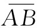
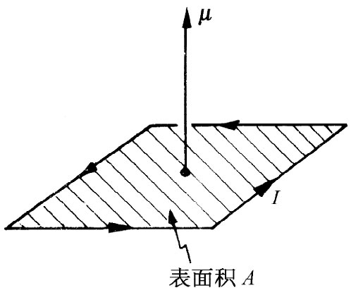
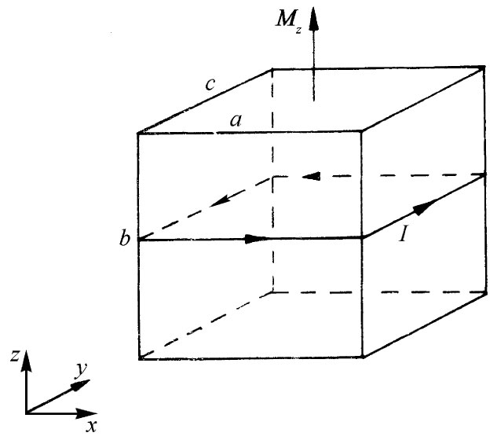
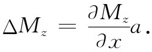
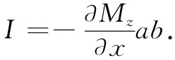
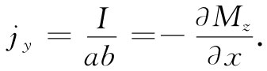
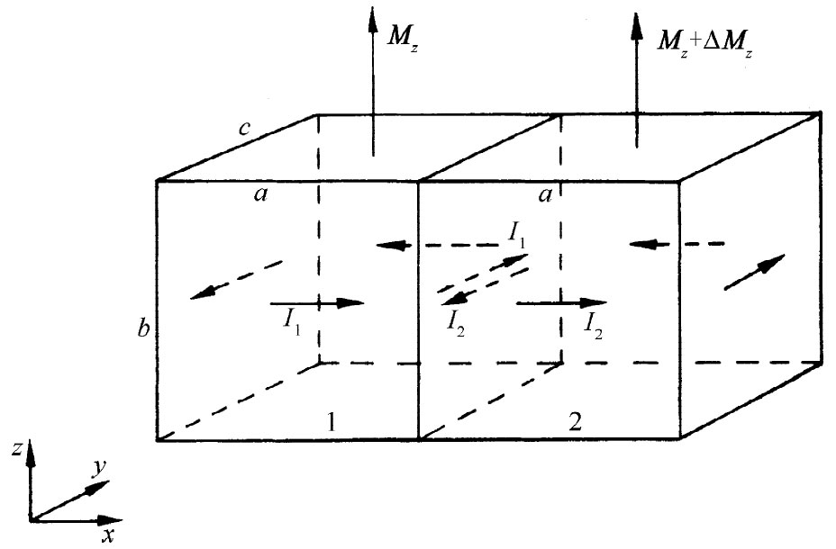
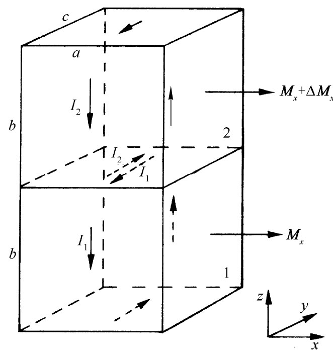
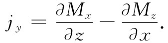

在本章中，我们将讨论某些材料磁矩的净效应远大于顺磁性或抗磁性的情况，这种现象称为铁磁性 。在顺磁性或抗磁性材料中，感生磁矩往往那么微弱，以致我们无需担心磁矩所产生的附加场。然而，对铁磁性 材料来说，那些由外加磁场所感生的磁矩非常巨大并会对场本身产生很大的影响。事实上，感生磁矩竟是如此强大，以致它们在产生被观测场的过程中往往起着支配的作用。因此，我们将不得不操心的事情之一，就是关于巨大的感生磁矩的数学理论。当然，那不过是一个技术性问题。真正的问题是，为什么磁矩会那么强——到底是怎么造成的？过一会儿我们就要来讨论这一问题。
求铁磁性材料中的磁场与存在电介质时求静电场的问题有些相似。你会记得，我们开始曾用一矢量场P——即单位体积中的偶极矩——来描述电介质的内部特性。然后，我们弄清楚了这种极化的结果与P的散度所提供的电荷密度ρ极化 ，即
ρ极化 =-▽·P （36.1）
是等效的。在任何情况下，总电荷都可以写成这个极化电荷加所有其他电荷之和，其他电荷的密度我们将写成 [1] ρ其他 。于是把E的散度与电荷密度相联系起来的麦克斯韦方程便变成
因此我们便可把电荷的极化部分抽出来并放在方程式的另一边，就得到一个新的定律：
▽·（∈0 E+P）=ρ其他 . （36.2）
这一定律表明，量（∈0 E+P）的散度等于其他电荷的密度。
当然，像在式（36.2）中那样把E和P放在一起，只有当我们懂得了它们间的关系时才会有用。我们已经知道，将感生偶极矩与场联系起来的理论是相当复杂的，而实际上它只能应用于某些简单情况，并且即使那样也还只是一种近似。我们希望使你们想起曾经用过的一个近似概念。为了求得电介质内部一个原子的感生偶极矩，就必须知道作用于一个单独的原子上的电场。我们做过这种近似——在许多情况下还不太坏——即作用于原子上的场与我们把该原子挖出后（保持所有附近其他原子的偶极矩都不变）留下的小洞中心处的场相同。你也会记得，极化电介质中空穴内的电场取决于该空穴的形状。我们就把以前的结果都总结在图36-1中。对于一个垂直于极化的薄盘形空穴，穴里的电场由下式给出：
这是我们用高斯定律证明的。另一方面，在一个平行于极化的针状槽里，我们曾经利用E的旋度等于零的事实证明槽内电场与槽外电场相同。最后，我们曾求出球形空穴中的电场介于槽内的场与盘内的场之间三分之一的样子：
这就是我们在考虑极化电介质中原子的遭遇时所用过的场。
图36-1 在电介质里的空穴中，电场取决于该空穴的形状
现在我们不得不用完全类似的方法来讨论磁的情况。完成此事的简单办法是讲：单位体积中的磁矩M，完全与单位体积中的电偶极矩P相似，因而M的负散度等价于一个“磁荷密度”ρm ——不管它可能指的是什么。当然，困难在于物理世界中并不存在任何像“磁荷”那样的东西。正如我们所知道的，B的散度恒为零。但这并不能阻止我们做出人为的类比 并写出
▽·M=-ρm ， （36.4）
这里不用说ρm 是纯数学形式。于是就能够做出与静电情况完全类似的结论并从静电学中引用我们所有原来的方程。人们常常做过一些像那样的事情。事实上，从历史方面讲，人们甚至相信这种类比是正确的。他们确信量ρm 就是代表“磁极”密度。然而，如今我们知道，材料的磁化乃起因于原子里的环行电流——或者来自原子内自旋的电子或者电子的运动。因此，依照物理观点，对事情如实地用原子电流而不用某种神秘莫测的“磁极”密度来加以描述，是较好的。顺便说说，这些电流有时被称为“安培”电流，因为安培最早提出物质磁性起因于环行的原子电流。
当然，在磁化物质中实际的微观电流其密度十分复杂，它的数值依赖于你在原子里进行观察的地方——它在某些地方会较大而在其他地方则较小；它在原子的某一部分指向这一方向而在另一部分又指向相反方向（正如微观电场在电介质中变化很大一样）。然而，在许多实际问题中，我们所感兴趣的仅仅是物质外面的场，或物质里面的平均 场——这里我们指的是对许许多多个原子取的平均。只有对于这种宏观 问题，用单位体积中的平均偶极矩M来描写物质的磁态才是方便的。我们现在所要证明的是，磁化物质的原子电流能够产生一种与M有关的大规模电流。
于是，我们将要做的就是，把电流密度j——那是磁场的真正来源——分成几个部分：一部分是描述原子磁矩的环行电流；而其他部分则为描述那里可能会存在的其他电流。把电流分成三部分往往最为方便。在第32章中我们曾对电流做过这样的区别，即在导体中能够自由流动的电流及在电介质中由于束缚电荷的来回运动所引起的电流。在§32-2中我们就曾写出
j=j极化 +j其他 ，
式中j极化 代表电介质中束缚电荷的运动所产生的电流，而j其他 则代表所有其他各种电流。现在我们要再进一步，把j其他 再分成两部分，一部分j磁化 描述该磁化材料内部的平均电流，另一部分为一个附加项，它是任何留下来的我们可称之为j传导 的那种电流。这最后一项一般将指导体中的电流，但也可包括其他电流——比如由穿过真空间自由运动的电荷所产生的电流。所以我们将总电流密度写成：
j=j极化 +j磁化 +j传导 . （36.5）
当然，正是这个总电流属于B旋度的麦克斯韦方程：
现在必须把电流j磁化 与磁化强度矢量M相联系。为了使你们能够明白今后将往何处去，此刻就告诉你们即将得到的结果是
j磁化 =▽×M. （36.7）
若已知一磁性材料中每一处的磁化强度矢量M，那么该环行电流密度就可以用M的旋度来表示。让我们来看看能否理解为什么会这样。
图36-2 从一根沿z方向被磁化的铁棒横截面上所看到的原子环行电流的示意图
首先考虑一根柱形棒的情况，它具有平行于其轴的均匀磁化。从物理方面讲，我们懂得像这样的均匀磁化，实际上意味着在材料内部各处原子环行电流的密度均匀。让我们试着想象在这材料的横截面内有效电流看起来会像什么。应该期望会看到有点像图36-2所示的那种电流。每个原子电流在一个小圆周上兜着圈子，而且所有这些环行电流都是沿同一方向绕行。那么这一物体的有效电流究竟怎么样呢？噢，在棒里的大多数地方完全没有什么效应，因为在每一电流近旁恰好有另一个与之反向的电流。如果设想一个小面积——但比起一单独原子来却要大得多的面积——诸如图36-2中由 线所标明的那个面，则穿过这个面的净电流等于零。因此在该材料内部任何地方都没有净电流。可是要注意，在材料表面上会存在未被其附近的反向电流所抵消的原子电流。在表面上始终有一个以相同方向环绕着该棒的净电流。现在我们明白，为什么以前会讲，一根均匀磁化棒相当于载有电流的一个长螺线管。
这个观点怎么会与式（36.7）一致呢？首先，在材料内部，磁化强度M是一恒量，因而它的一切微商就都等于零。这与我们的几何图像相符。可是，在表面上，M实际上却不是恒量——它只在到达边缘之前才是常数，然后便突然消失为零。因此，刚好在表面上存在巨大的梯度，而按照式（36.7）这将会给出一个大的电流密度。假设我们考察图36-2中C点附近所发生的情况，选取如图中所示的x和y方向，则磁化强度M将沿z方向。写出式（36.7）的各分量，得
在C点上，微商∂Mz /∂y为零，而∂Mz /∂x则很大并为正。式（36.7）表明，在负y方向上有一个大的电流密度。这与环绕该棒的表面电流的上述图像相符。
现在要求出材料中磁化强度逐点变化那种较复杂情况下的电流密度。不难定性地看到，如果相邻区域内的磁化强度不同，则那些环行电流不会完全抵消，因而在该材料体积中会有净电流。我们想要定量地算出的就是这一效果。
|  |  |
| 图36-3 一个电流回路的磁偶极矩μ为IA | 图36-4 被磁化的一小块材料与一环行的表面电流等效 |
首先，我们需要回忆一下§14-5中的结果，即环行电流I具有的磁矩μ由下式所给出：
μ=IA， （36.9）
其中A为该电流回路的面积（见图36-3）。现在让我们考虑磁化材料内部的一个小矩形块，如示意图36-4所示。我们选取的这块材料是那么小，以致可以认为其中的磁化强度是均匀的。若这一块材料在z方向有一磁化强度Mz ，则其净效果将与围绕着图上所示的那些垂直面上的面电流相同。根据式（36.9）我们能够求出这些电流的大小。这块材料的总磁矩等于磁化强度乘以其体积：
μ=Mz （abc），
由此得到（记住该回路的面积为ac）
I=Mz b.
换句话说，在每一垂直面上单位（垂直方向）长度的电流等于Mz 。
现在假设我们想象两个彼此相邻的小块，如图36-5所示。由于第二块被从第一块那里稍微移动了一点，所以它会有一稍微不同的磁化强度垂直分量，我们称之为Mz +ΔMz 。在两块之间的界面上，对总电流现有两种贡献。第一块将产生一个流向正y的电流I1 ，而第二块则将产生流向负y方向的面电流I2 ，沿正y向的总面电流等于两者的代数和 [2] ：
I=I1 -I2 =Mz b-（Mz +ΔMz ）b=-ΔMz b.
可以将ΔMz 写成Mz 在x方向上的微商乘以从第一块至第二块的位移，那刚好是a：

这样流经两块间的电流就是

要把电流I与平均体积电流密度j联系起来，就必须认识到，这一电流I实际上被布满于某个横截面积上。如果我们设想材料的整个体积是由这样的小块充填起来的，则每一个（垂直于x轴的）这样的侧面便可以与每一小块联系起来 [3] 。于是我们看到要与电流I联系的面积恰好就是前面一个面的面积ab。因而得到结果：

我们至少开始有了M的旋度。
|  |  |
| 图36-5 如果两相邻块中的磁化强度不一样，便将有净表面电流存在于其间 | 图36-6 高低相重叠的两块也可对jy 作出贡献 |
在jy 中，还应有因磁化强度x分量随z变化而引起的另一项。对j的这一贡献，来自如图36-6所示的那种上下重叠的两小块之间的界面。利用刚才所做的相同论证，你可以证明这个界面将对jy 贡献量∂Mx /∂z。这些就是能够对电流y分量作出贡献的唯一一些面，因而我们得到在y方向上的总电流密度

计算出一个立方体其余表面上的电流——或者在利用了z方向完全是任意的这个事实——我们能够得出结论，电流密度矢量确实是由下式给出的：
j=▽×M.
因此，若我们选择用单位体积的平均磁矩M来描述物质中的磁化情况，则可发现，那些环行的原子电流等效于由式（36.7）给出的物质内的平均电流密度。如果该材料也是一种电介质，则另外还可能有极化电流j极化 =∂P/∂t。倘若该物质又是导体，则同时还可能有传导电流j传导 。因此我们可以将总电流写成